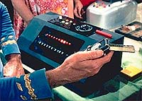
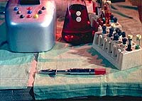
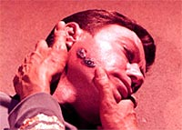
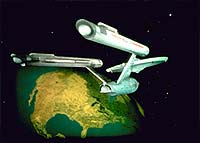
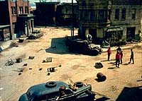
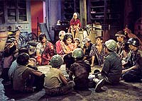
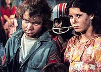

|
MANCHETE
DO EPISÓDIO
Segmento
exagera na metáfora, apesar
de dar boa dica a cientistas humanos
Episódio
anterior | Próximo episódio
Sinopse:
Data Estelar:
2713.5.
 A
Enterprise responde a um velho pedido de socorro proveniente de um
planeta que tem incrível semelhança com a Terra do século 20. Um
grupo avançado com Kirk, Spock, McCoy, a ordenança Rand e mais
dois seguranças desce para investigar e descobre que os nativos do
planeta conduziram experimentos para prolongar a vida, mas
conseguiram, em vez disso, criar um vírus mortal. O microrganismo
matou todos os adultos ao provocar envelhecimento acelerado e
loucura. Nas crianças, o vírus reduziu absurdamente o processo de
envelhecimento natural, fornecendo uma infância de séculos.
A essa altura, não há mais adultos vivos no planeta, apenas crianças,
que sobrevivem da melhor maneira possível sem quem os ajude. O
grupo de descida acaba contraindo o vírus, que começa
imediatamente a deteriorar todos, menos Spock. A fisiologia do
Vulcano impede que ele seja afetado pelo vírus, mas ainda assim ele
é um portador, ficando impossibilitado de voltar à nave.
 Até
que uma cura para a doença possa ser encontrada e desenvolvida, o
grupo de descida está confinado ao planeta. Retornar à Enterprise
implicaria contaminar todos os tripulantes a bordo.
O grupo de descida tenta fazer amizade com as crianças através de
Miri, uma menina que eles encontram e que fica junto deles por ter
se apaixonado pelo capitão Kirk. Mas os demais estão muito
assustados pelas coisas horríveis que os adultos do planeta fizeram
para confiar nos tripulantes da Enterprise. Para piorar as coisas,
Miri tem um acesso de ciúmes por causa da ordenança Rand e resolve
ajudar as crianças a prejudicar o grupo de descida.
Jahn, o líder das crianças, primeiro as instrui a roubar todos os
comunicadores dos tripulantes, deixando-os sem comunicação com a
nave. Depois, eles sequestram a ordenança Rand, por sugestão de
Miri. Kirk tenta conversar com as crianças e convencê-las de que
é vital que elas o ajudem, mas a única coisa que ele consegue é
levar uma surra delas.
Uma das crianças mais velhas começa a exibir sintomas da doença e
Kirk tenta convencê-las de que isso irá acontecer com todos eles
eventualmente, quando atingirem a puberdade. Quando Miri vê que ela
também está se deteriorando, ela ajuda Kirk a convencer Jahn e os
outros de que ele está falando a verdade.
 Enquanto
isso, McCoy desenvolveu uma possível cura para a doença. Sem os
computadores da Enterprise para verificar o resultado, o médico está
impossibilitado de inocular o grupo de descida. Com o tempo se
esgotando para eles, McCoy decide se fazer de cobaia e injetar em si
mesmo a substância. Após alguns momentos de tensão, Spock e Kirk
verificam que o medicamento funcionou.
Todos são inoculados e o grupo de descida volta à Enterprise. A
Federação, ao ser informada da situação do planeta, decide
enviar pessoal para colonizar o planeta e tomar conta das crianças,
que agora poderão ter uma vida normal.
Comentários:
"Miri" parte de uma premissa
extremamente interessante e sempre atual. A discussão básica gira
em torno dos perigos da terapia genética e do quão longe se deve
ir na busca pela imortalidade ou por métodos de prolongamento da
vida.
 O
tema é quente na ciência contemporânea: vírus são considerados
hoje vetores competentes para "infectar" células de
organismos com o material genético que se deseja incluir nele. Em
compensação, os perigos de tais estratégias geralmente são difíceis
de estimar. É exatamente isso que vemos no episódio.
A analogia com a situação humana é reforçada pelo fato de que
estamos vendo ali uma outra "Terra", uma versão
alternativa, mas ainda assim extremamente similar a nosso planeta.
Mais uma vez, a Série Clássica opta pela falta de acurácia
científica (quais são as chances de haver um planeta exatamente
igual à Terra, mesmo levando em conta a vastidão do Universo?)
para transmitir com maior força uma metáfora que relacione o episódio
com a humanidade. Sem dúvida, é uma das marcas do criador Gene
Roddenberry, que foi perpetuada ao longo de toda a série original.
É também uma escolha totalmente desnecessária e não-recomendada.
 O
fato de termos uma cópia da Terra é ruim não só por tornar a tal
"mensagem da semana" óbvia demais, mas por ser apenas uma
forma fácil de se produzir um teaser interessante para o episódio
("Outra Terra?", Fade Out) e de elevar à enésima potência
a falta de verossimilhança da já forçada "teoria do
desenvolvimento paralelo dos mundos", criada por Roddenberry
para baratear a série usando sempre essa desculpa para apresentar
alienígenas com aparência e cultura humanas (essa bobagem seria
parcialmente redimida e legitimada com o excelente episódio "The
Chase", da sexta temporada de A Nova Geração).
E se pelo menos o tema central é bastante contemporâneo, a
estrutura do episódio é bastante datada. O tratamento que Miri
recebe do capitão Kirk, que pede que ela limpe mesas e aponte lápis,
é digno do machismo imperante nos anos 1960. A mesma coisa se vê
no comentário da ordenança Rand, que confessa em dado momento que
fazia de tudo na nave para que o capitão olhasse para as pernas
dela.
 Outro
tema bastante incômodo do episódio (e que marcaria a Série Clássica,
voltando a aparecer no horroroso "And the Children Shall
Lead", da terceira temporada) é a premissa de que crianças,
sob má ou nenhuma influência, são inerentemente malévolas e cruéis.
Certamente era outra idéia em voga na época em que o episódio foi
produzido (a educação das crianças era extremamente rígida e
impositiva, como se pessoas jovens fossem incapazes de raciocinar
civilizadamente) e que já está há muito ultrapassada.
Apesar disso, o episódio tem um andamento bastante agradável e
algumas cenas memoráveis, não só do ponto de vista das atuações,
mas também do trabalho de câmera do diretor Vincent McEveety. Dois
exemplos são dignos de nota: um deles ocorre quando Kirk está para
levar uma surra dos moleques. A câmera sai de uma tomada bem geral
para vagarosamente fechar em Kirk e depois no rosto de uma menininha
com cara de "malvada", sorrindo enquanto o bom capitão
leva uns bons tabefes da meninada. O outro é quando McCoy injeta a
droga e cai inconsciente. O ângulo da câmera, de cima para baixo,
adiciona tensão e dramaticidade à já competente interpretação
de DeForest Kelley.
 E
por falar em atores, William Shatner tem um bom desempenho com seu
capitão Kirk, chegando a demonstrar toda a sua preocupação e
descontrole ao atirar crianças para os lados e afastá-las de si,
quando elas primeiro tentam agredi-lo. Foi incômodo ver o capitão
Kirk maltratando criancinhas (por mais que fossem criancinhas
malvadas de 300 anos e Kirk estivesse sob efeito de uma doença que
leva eventualmente à insanidade), e por isso a cena ganha um valor
especial.
Mas quem realmente impressiona é Kim Darby, com sua convincente e
intensa interpretação da jovem Miri. Aliás, como nota de rodapé,
vale destacar a escolha das duas principais crianças do planeta,
Miri e Jahn, que certamente são corruptelas de Mary e John, dois
nomes extremamente comuns. Claramente a idéia era reforçar o fato
de que essas crianças perderam seus pais muito cedo e cresceram sem
adultos para guiá-las e dizer qual era a real pronúncia de seus
nomes.
Citações:
Kirk - "I think children have an
instinctive need for adults; they want to be told right and wrong."
("Acho que as crianças têm uma necessidade instintiva de
adultos; eles querem que lhes digam o que é certo e errado.")
Kirk - "No more blah, blah, blah!"
("Sem mais blá, blá, blá!")
Trivia:
 A primeira versão do roteiro de "Miri" mostrava
muito mais a relação entre Miri e Jahn, num ambiente distorcido do
tipo "Peter Pan", em que Jahn era Peter, Miri, Wendy, e os
meninos, os "garotos perdidos". A sociedade das crianças
era cheida de ritualismos: quando era descoberto que a infância de
Miri estava no fim, os garotos individualmente anunciavam que não
podiam mais considerá-la como sua amiga.
A primeira versão do roteiro de "Miri" mostrava
muito mais a relação entre Miri e Jahn, num ambiente distorcido do
tipo "Peter Pan", em que Jahn era Peter, Miri, Wendy, e os
meninos, os "garotos perdidos". A sociedade das crianças
era cheida de ritualismos: quando era descoberto que a infância de
Miri estava no fim, os garotos individualmente anunciavam que não
podiam mais considerá-la como sua amiga.
A rua cenográfica
pertencente à Desilu usada neste episódio foi modificada para
parecer mais velha e abandonada. O mesmo cenário foi utilizado (de
forma menos debilitada) em "The Return of the Archons"
e "The City on the Edge of Forever", ambos da
primeira temporada.
A cena em que
McCoy caía após injetar o antídoto contou com uma ajuda do cenário.
Parte do set do "laboratório" foi construída em uma
plataforma erguida, para que a câmera pudesse filmar a cena de
forma a destacar a figura do médico.
A técnica
para fazer as manchas sumirem do rosto do médico foi filmar o ator
DeForest Kelley em várias passagens, cada vez com menos maquiagem,
e editando o filme e incluindo "fades" de modo a suavizar
as transições. A mesma técnica mostrou a real aparência de Vina
em "The
Cage".
A terminologia
da série ainda não estava muito estabelecida nesse momento: há
uma referência à "Central Espacial", em vez do padrão
escolhido a posteriori, "Comando da Frota Estelar".
Entre as crianças
que figuraram neste episódio estavam os dois filhos de Grace Lee
Whitney e as filhas de William Shatner --uma das quais ele está
segurando no colo no fim do episódio.
O ator Leonard
Nimoy comentou sobre o tema básico do episódio. "No começo
desse episódio, descobrimos que estamos nos aproximando não da
nossa Terra, mas da Terra. Isso nos dá a primeira de nossas histórias
de universo paralelo, em que podemos tirar uma analogia direta entre
o que está acontecendo lá e o que poderia acontecer conosco. Acho
que chamaria essas de histórias de alerta: Cuidado para não deixar
que aconteça conosco. E há um elemento de pecados paternos
visitados pelas crianças tematicamente nessa história e nós
fizemos um bocado desses e alguns deles muito bons. Cuidado com o
que você está fazendo em sua geração para não passar os
resultados negativos a seus descendentes."
O episódio
foi um presente para os atores, segundo Nimoy. "Claro, um dos
benefícios de fazer uma história onde descemos em outra Terra é
que os cenários, os prédios e assim por diante poderiam se parecer
com os da Terra. Logo, poderíamos usar cenários existentes, ruas
cenográficas em Los Angeles e assim por diante. A cena do teleporte
acontece em uma cidade cenográfica em Culver City, que era
propriedade da Desilu Pictures na época. Para nós foi uma experiência
muito libertadora estar em ruas abertas em vez de nos palcos
fechados e nos cenários construídos no qual estávamos confinados
a maior parte do tempo. O trabalho no exterior foi um presente para
nós. Um pouco difícil para o departamento de produção porque as
condições do tempo poderiam variar enormemente e criar problemas
de produção e gastos e estávamos em uma agenda e em um orçamento
bem apertados."
Nimoy também
transfere parte dos créditos para os atores Kim Darby e Michael J.
Pollard. "Eles merecem menção aqui. Eles são fortes atores
coadjuvantes nesse episódio, e eles tiveram grandes carreiras em
outroas projetos, incluindo alguns grandes filmes. Kim Darby em 'True
Grit', com John Wayne."
Ficha
técnica:
Escrito por Adrian
Spies
Direção de Vincent McEveety
Exibido em 27/10/1966
Produção: 12
Elenco:
William Shatner como James Tiberius Kirk
Leonard Nimoy como Spock
DeForest Kelley como Leonard H. McCoy
Elenco convidado:
Kim Darby como Miri
Michael J. Pollard como Jahn
Grace Lee Whitney como ordenança Janice Rand
Jim Goodwin como tenente John Farrell
David L. Ross como tenente Galloway
Episódio
anterior | Próximo episódio
|